Power Engineering
Second Class (B2):
Combustion and Plant Systems
Table of Contents
| Chapter | Page |
|---|---|
| 1. Power Plant Fuel Systems | 1 |
| 2. Power Plant Water and Steam Systems | 33 |
| 3. Measurement and Control Components | 67 |
| 4. Control Instrumentation Systems | 143 |
| 5. Fuels and Combustion Calculations | 189 |
| 6. Firing and Draft Equipment | 229 |
| 7. Combustion Control and Safeguards | 301 |
| 8. Environmental Monitoring | 339 |
| 9. Environmental Control Methods | 373 |
| End of Chapter Questions and Solutions | 409 |
Power Plant Fuel Systems
1
Learning Outcome
When you complete this learning material, you will be able to:
Describe the design and operation of typical power plant fuel systems.
Learning Objectives
You will specifically be able to complete the following tasks:
- 1. Describe, using a sketch, the design and operation of fuel oil supply systems.
- 2. Describe, using a sketch, the design and operation of fuel gas supply systems.
- 3. Describe, using a sketch, the design and operation of solid fuel supply systems.
Objective 1
Describe, using a sketch, the design and operation of fuel oil supply systems.
FUEL OIL PROPERTIES
Fuel oils include most petroleum products which are less volatile than gasoline. The lighter oils are used in internal combustion (diesel) engines and turbines. The heavier oils that require heating are often used to fire boilers.
Fuel oil is derived from petroleum (crude oil) and is the residue left after the more volatile constituents have been removed. Commercial fuel oils are refined either by distillation or by cracking.
Distillation is the process used to separate oil into its constituent parts. Heat is applied to the crude oil base. The light, more volatile, oil vaporizes and leaves the crude oil. The vapours are captured and condensed. The condensed liquids are termed distillates. The residual oils are the bottoms or crude left after distillation. The residuals can also be blends of residuals and distillates.
Cracking is the process used to secure greater gasoline yields from the heavier crude oil fractions. The process of cracking uses heat and pressure to decompose the oil into a new series of hydrocarbons. Cracking, unlike simple distillation, actually changes the hydrocarbon structure and produces more of the valuable lighter hydrocarbons (gasoline) from crude oil. The hydrocarbons are separated according to their boiling range by a distillation process. Commercial fuel oils may be either distillates or residuals and either straight run (distillation) or cracked.
The important properties of fuel oil are specific gravity, heating value, viscosity, flash point, fire point, pour point, and sulphur content. Specific gravity is important because oil is sold by volume. Specific gravity in degrees API (American Petroleum Institute) is calculated from the formula:
$$ \text{Degrees API} = \frac{141.5}{\text{specific gravity at } 15^\circ / 15^\circ} - 131.5 $$
(Specific gravity at \( 15^\circ/15^\circ \) is the specific gravity of the oil at \( 15^\circ\text{C} \) referred to the specific gravity of water at \( 15^\circ\text{C} \) .) The specific gravity of any petroleum product bears a direct relationship to its heating value. The U.S. Bureau of Standards gives the following equation for the heating value of a fuel oil.
Heat of combustion (kJ/kg) = 2.326 [(22,320 - 3,780) x (specific gravity at 15°/15°)]
Table 1 shows the relationship between specific gravity and heat values for fuel oil at 15°C.
Table 1
Fuel Oil Measurements at 15°
| Deg API | Specific Gravity | kg/L | kJ/kg | kJ/L | kg/barrel | kg/m 3 |
|---|---|---|---|---|---|---|
| 3 | 1.0520 | 1.0497 | 42 310 | 44 408 | 166.9 | 1049.7 |
| 4 | 1.0443 | 1.0413 | 42 426 | 44 174 | 165.7 | 1041.3 |
| 5 | 1.0366 | 1.0341 | 42 543 | 43 990 | 164.5 | 1034.1 |
| 6 | 1.0291 | 1.0269 | 42 659 | 43 803 | 163.3 | 1026.9 |
| 7 | 1.0217 | 1.0185 | 42 775 | 43 566 | 162.1 | 1018.5 |
| 8 | 1.0143 | 1.0111 | 42 891 | 43 293 | 160.9 | 1011.1 |
| 9 | 1.0071 | 1.0051 | 43 008 | 43 235 | 159.8 | 1005.1 |
| 10 | 1.0000 | 0.9979 | 43 124 | 43 093 | 158.8 | 997.9 |
| 11 | 0.9930 | 0.9907 | 43 240 | 42 847 | 157.7 | 990.7 |
| 12 | 0.9861 | 0.9848 | 43 357 | 42 702 | 156.6 | 984.8 |
| 13 | 0.9792 | 0.9776 | 43 473 | 42 504 | 155.5 | 977.6 |
| 14 | 0.9725 | 0.9704 | 43 589 | 42 304 | 154.4 | 970.4 |
| 15 | 0.9659 | 0.9644 | 43 706 | 42 156 | 153.4 | 964.4 |
| 16 | 0.9593 | 0.9572 | 43 822 | 41 953 | 152.3 | 957.2 |
| 17 | 0.9529 | 0.9512 | 43 938 | 41 799 | 151.3 | 951.2 |
| 18 | 0.9465 | 0.9452 | 44 031 | 41 626 | 150.3 | 945.2 |
| 19 | 0.9402 | 0.9380 | 44 147 | 41 418 | 149.3 | 938.0 |
| 20 | 0.9340 | 0.9320 | 44 240 | 41 247 | 148.3 | 932.0 |
| 21 | 0.9279 | 0.9260 | 44 333 | 41 601 | 147.3 | 926.0 |
| 22 | 0.9218 | 0.9201 | 44 450 | 40 902 | 146.4 | 920.1 |
| 23 | 0.9159 | 0.9141 | 44 542 | 40 720 | 145.4 | 914.1 |
| 24 | 0.9100 | 0.9081 | 44 636 | 40 540 | 144.5 | 908.1 |
| 25 | 0.9042 | 0.9021 | 44 729 | 40 356 | 143.6 | 902.1 |
| 26 | 0.8984 | 0.8973 | 44 822 | 40 225 | 142.7 | 897.3 |
| 27 | 0.8927 | 0.8913 | 44 915 | 40 041 | 141.8 | 891.3 |
| 28 | 0.8871 | 0.8853 | 45 008 | 39 851 | 140.9 | 885.3 |
| 29 | 0.8816 | 0.8805 | 45 078 | 39 698 | 140.0 | 880.5 |
| 30 | 0.8762 | 0.8745 | 45 170 | 39 511 | 139.1 | 874.5 |
| 31 | 0.8708 | 0.8697 | 45 241 | 39 355 | 138.3 | 869.7 |
| 32 | 0.8654 | 0.8638 | 45 334 | 39 163 | 137.4 | 863.8 |
| 33 | 0.8602 | 0.8590 | 45 403 | 39 007 | 136.6 | 859.0 |
| 34 | 0.8550 | 0.8530 | 45 497 | 38 815 | 135.8 | 853.0 |
| 35 | 0.8498 | 0.8482 | 45 566 | 38 653 | 134.9 | 848.2 |
| 36 | 0.8448 | 0.8434 | 45 636 | 38 494 | 134.1 | 843.4 |
| 37 | 0.8398 | 0.8386 | 45 706 | 38 335 | 133.3 | 838.6 |
| 38 | 0.8348 | 0.8338 | 45 776 | 38 174 | 132.6 | 833.8 |
| 39 | 0.8299 | 0.8290 | 45 869 | 38 015 | 131.8 | 829.0 |
| 40 | 0.8251 | 0.8230 | 45 939 | 37 814 | 131.0 | 823.0 |
| 41 | 0.8203 | 0.8182 | 46 008 | 37 650 | 130.3 | 818.2 |
| 42 | 0.8156 | 0.8134 | 46 078 | 37 488 | 129.5 | 813.4 |
Viscosity is measured by the time taken for a standard quantity of oil to flow through a standard orifice. Heavy oils take longer than light oils. Thus, heavy oils have a high viscosity; that is, they are more viscous.
There are several standard viscosimeters used for testing oils, such as the Saybolt, Redwood, and Engler. In the U.S. and Canada reference is usually made to the Saybolt reading although conversion tables are available for all scales.
Since viscosity varies with temperature, it is necessary to specify the standard viscosimeter used and also the temperature at which the test was done, e.g. Saybolt Universal at 38°C, or Furol at 50°C. Temperature plays a part in the measurement of viscosity. A given oil flows slower at lower temperatures than it does at higher temperatures.
Fuel Oil Grades
ASTM (American Society for Testing and Materials) classifies fuel oils by grade number. The grades range from Grade 1 to Grade 6, with Grade 1 being the lightest and Grade 6 the most viscous. An extract of the standards is shown in Table 2. No. 6 oil is designated as heavy industrial fuel oil or bunker C, often used to fire boilers. An analysis of bunker C oil shows an average composition of carbon 87.3%, hydrogen 10.8%, sulphur 1.2%, nitrogen 0.2%, and oxygen and indeterminate 0.5% with a higher heating value 43 030 kJ/kg.
Grade No. 1 is a light distillate. It is used in vaporizing type burners. The oil is highly volatile producing a minimum of residue as it evaporates.
Grade No. 2 is a slightly heavier distillate than No. 1 and is used for atomizing burners. It is easier to handle than the residual oils but is also more costly.
Grade No. 4 (light) is a heavy distillate or a distillate and residual blend. It requires pressure to be atomized at the burner. It requires little or no heating to be stored and pumped.
Grade No. 4 is a heavy distillate or a heavy residual and distillate fuel blend. It requires little heating except for extremely cold weather. It is used with atomizing burners.
Grade No. 5 (light) is a residual fuel of mid viscosity. It usually requires some preheating and atomizing types of burners.
Grade No. 5 (heavy) is a residual oil heavier than No. 5 (light) and is used in similar applications. Some preheating is required in cold ambient conditions.
Grade No. 6 is also called bunker C. It is high viscosity oil that requires heating for storage and pumping as well as additional heating for atomizing at the burners.
Table 2
Commercial Standards for Fuel Oils No's 1 to 6
| Number | Description | Flash Point °C | Pour Point °C | Viscosity Seconds | |
|---|---|---|---|---|---|
| Saybolt Universal at 38°C | Saybolt Furol at 50°C | ||||
| 1 | Distillate oil (Volatile fuel) | 74 Max. | -18 | -- | -- |
| 2 | Distillate oil (Moderately volatile) | 88 Max. | -12 | -- | -- |
| 4 | Distillate oil (Low viscosity) | 110 Max. | -7 | 35 | -- |
| 5 | Medium viscosity (Residual oil) | 54 Min. | -- | 50 | 40 |
| 6 | High viscosity (Residual oil) | 66 Min. | -- |
900
9000 |
Min. 45
Max. 300 |
The flash point is the temperature at which the oil gives off enough vapour to make a flammable mixture with air. The pour point is the temperature below which the oil ceases to flow.
The sulphur content varies within each grade of oil. Typically it is the lowest in Grade No. 1 (0.01 % to 0.5% by weight) and increases to the highest in Grade No. 6 (0.7-3.5%). The sulphur content should be kept to a minimum due to corrosion and sulphur dioxide emissions. The U.S. standard for the oils listed in Table 2 gives the maximum allowable sulphur content as follows:
- • No. 1: 0.5%
- • No. 2: 0.5%
- • No. 4: 0.75%
- • No. 5: 0.5% - 3.0%
- • NO. 6: 0.7% - 3.5%
By centrifuging a sample of oil, the amount of water and sediment can be found. These are impurities, and while it is not economical to completely eliminate them, they should not occur in excessive quantities (e.g. more than 2%).
Incombustible impurities in oil from natural salts, chemicals used in refining operations, or from rust and scale picked up in transit show up as ash. Ash is abrasive to pumps, valves, and burner parts and may form slag in the furnace and consequently should be held to a minimum.
FUEL OIL SUPPLY SYSTEMS
In order to handle fuel oil from storage tanks to burner nozzles, an interconnected assembly of strainers, oil heaters, and pumps is required along with automatic regulators, auxiliary equipment, and instruments. Fig. 1 shows an oil system for storing and delivering heavy fuel oil to boiler burners.
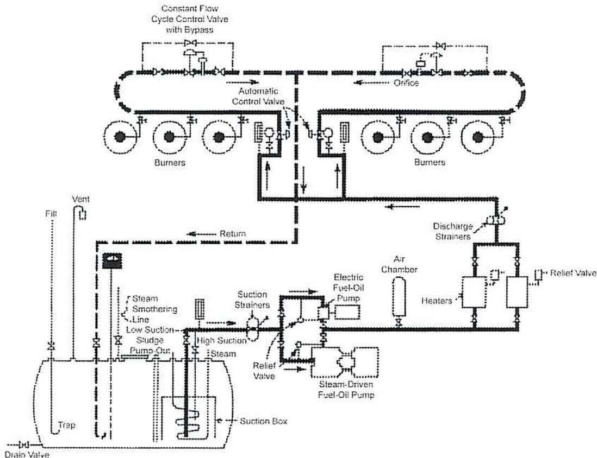
The diagram illustrates a complex fuel oil supply system. At the bottom left, a large storage tank is shown with a 'Drain Valve' at its base. A 'Suction Box' is located inside the tank, connected to a 'Low Suction' line. A 'Steam Smothering Line' enters the tank from the top, and a 'Trap' is also connected to it. A 'Vent' pipe extends from the top of the tank. The 'Low Suction' line leads to a 'Steam-Driven Fuel-Oil Pump', which has a 'Relief Valve'. Above this pump is an 'Electric Fuel-Oil Pump'. The discharge from the electric pump passes through 'Heaters' and an 'Air Chamber', then through 'Discharge Strainers'. A 'Relief Valve' is also present on this discharge line. The fuel oil then splits into two parallel lines. The upper line contains a 'Constant Flow Cycle Control Valve with Bypass' and an 'Orifice'. The lower line contains an 'Automatic Control Valve'. Both lines lead to a series of 'Burners'. A 'Return' line is shown connecting the burners back to the storage tank.
Figure 1
Oil-handling System
Fuel Oil Storage Tanks
The fuel oil storage tank shown in Fig.1 is a carbon steel vessel designed for a maximum pressure of 100 kPa gauge pressure. The tank is vented to atmosphere to prevent over pressurization during filling and vacuum conditions while draining. A flame arrestor is attached to the vent to reduce the possibility of a tank explosion. The purpose of the steam smothering line is to blanket the tank with steam extinguishing fires that may occur in the tank.
The fuel oil pumps have a high and a low suction line. Normal operation is through the low suction line. If the water and sludge settling out of the fuel oil get into the pump suction, the pump suction is switched to the high suction line. The water and sludge can be removed through the sludge pump-out connection. Once the water and sludge are removed, it is important to switch back to the low suction line.
The fill and return lines terminate in u-tube or trap sections. If the tank level is drawn down below these lines, the liquid in the u-tubes prevent combustible vapours from escaping from the tank and creating a hazardous situation in the operating area.
The steam heating coil is used to heat the oil in the suction box area of the tank to a minimum of 38 °C so that it can be pumped from the storage tank to the oil heaters.
Suction Strainers
The basket strainers used to filter the fuel oil upstream of the pumps are in a duplex arrangement; see Fig.2. In the duplex design one filter is in service (oil flows through it) while the other is in standby. The flow can be switched from side to side for cleaning without having to shut down the fuel oil system. There is no loss of pressure when the plug valve is moved from one side to the other (the flow is never completely shut off when switching.) The mesh size of the filtering media depends on the type of fuel oil used. For example, if no. 2 fuel oil is used, a 100-mesh filter is used. If the fuel oil is no. 6, a 10-mesh filter is used.
The filter differential pressure switch (pressure difference between inlet and outlet) is set to alarm at a specified pressure (10 to 15 kPa) differential, indicating the need to switch to the other filter and clean the filter taken out of service.
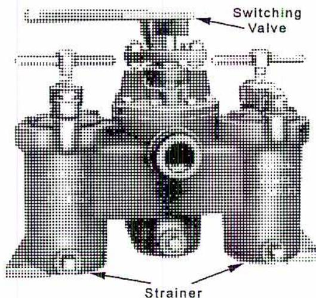
Figure 2
Kraissl Duplex Strainer
Fuel Oil Pumps
A fuel oil system usually uses a positive displacement gear type pump, such as a rotary screw pump or gear pump. The pump must be equipped with a discharge pressure relief valve that directs the oil back to the storage tank if the flow of fuel oil is shut off downstream of the pump. Some installations have a second PSV (Pressure Safety Valve) downstream of the pump, which is set at a lower pressure than the one on the pump. The
purpose of this PSV is to keep the pump-mounted PSV from lifting, except in extreme emergencies.
In Fig. 1 there are two pumps. The electric driven one is used during plant startup, while the steam driven one is used once the boilers are in service and steam is available. The electric one is also used as a standby when the steam driven one is out of service.
The pumps have to be able to deliver sufficient fuel oil pressure to the burners. If the burners use mechanical atomization, then the pressure required ranges from 345 to 1725 kPa. If the burners use steam atomization, then the pressure required ranges from 15 to 860 kPa.
Fuel Oil Heaters
Fuel oil heaters are heat exchangers, usually of shell and tube construction. If the burner uses steam atomization, the exchanger must be sized so that it can heat the oil up to 85 °C from 38 °C (the temperature of the fuel oil coming from the storage tank). If the burner uses mechanical atomization, the oil needs to be heated up to 104 °C. The fuel oil heaters and the pumps can be two separate units, or they can be combined on a steel skid, as shown in Fig. 3.
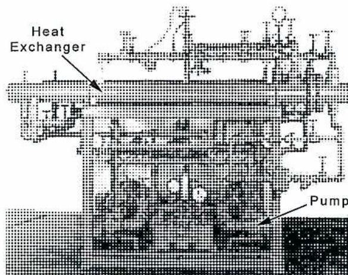
Figure 3
Duplex Fuel Oil Pump and Heater
Discharge Strainers
These strainers are also a duplex type of filter. They remove any material from the fuel oil that could cause problems with the burner nozzles. As with the suction strainers, the mesh size depends on the type of fuel oil being used. The mesh size of this strainer is usually slightly smaller than the size of the pump suction strainer as the viscosity of the fuel oil leaving the heater is lower than the viscosity of the fuel oil going through the pumps.
Automatic Control Valve
The purpose of this valve is to regulate the supply of oil to the burners. The combustion control system sends a signal to the control valves to supply the required flow of oil to the banks of burners. The oil is fed in proportion to the supply of combustion air required for stable firing. The firing rate is dependent upon the boiler steam output requirements.
Constant Flow Cycle Control Valve
The oil pumps deliver more oil than is required by the burners. The excess oil is returned to the oil storage tank by the constant flow cycle control valve. For mechanical atomizing burners, this valve maintains a pressure sufficient for the oil to be mechanically atomized.
Burners
Oil burners are often designed to burn oil and natural gas. These burners offer the flexibility of firing the boiler on either fuel. This also provides a backup, if one system is out of service. The coen burner in Fig. 4 is a dual fuel burner and also a low NO x design. The oil gun and atomizer fits in the burner throat. The nozzle extends past the air swirl plate or distributor. The gas header supplies the gas inner spuds and the outer spuds, which extend beyond the burner throat. The spuds are the gas nozzles that give the flame its location and shape. The pilot burner is positioned to light either the gas inner spuds or the oil atomizer.
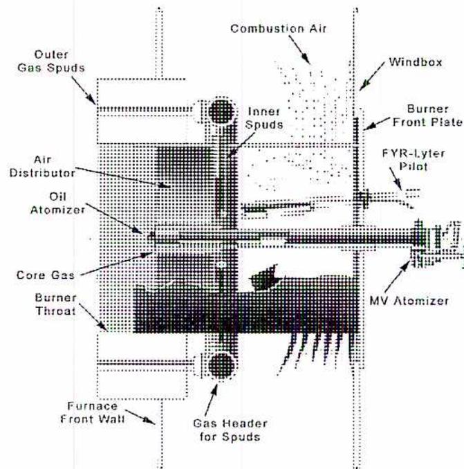
The diagram illustrates the internal components of a dual-fuel burner assembly. On the left, a vertical stack of components is shown: Outer Gas Spuds, Air Distributor, Oil Atomizer, Core Gas, and Burner Throat. These are housed within a Furnace Front Wall. At the bottom, a Gas Header for Spuds is connected. The central part of the assembly features Inner Spuds and a Gas Header. To the right, the assembly is connected to a Windbox via a Burner Front Plate. Combustion Air is shown entering from the top. Various atomizers are labeled: FYR-Lyter Pilot, MV Atomizer, and Oil Atomizer. The diagram uses cross-hatching and shading to differentiate between various parts of the burner.
Figure 4
Dual Fuel Low NO
x
Burner
The burner in Fig. 4 uses steam to atomize the oil. A flow of steam mixes with the oil in small passages or nozzles in the atomizer tip. The energy in the steam helps to break the oil into small particles and atomize the oil for combustion. A view of the burner tip is shown in Fig. 5. The steam supply runs down the center of the oil gun. The oil supply tube surrounds the steam supply tube.
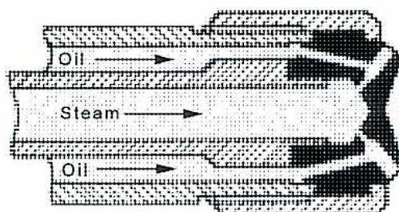
A cross-sectional diagram of a burner tip. It shows three main flow channels. The central channel is labeled 'Steam' with an arrow pointing to the right. This central channel is flanked by two outer channels, both labeled 'Oil' with arrows pointing to the right. The channels converge towards the right side of the diagram, leading into a complex, textured region representing the atomizer tip where the steam and oil would mix and be atomized.
Figure 5
Steam Atomizing Burner Tip
Objective 2
Describe, using a sketch, the design and operation of fuel gas supply systems.
GAS PROPERTIES
Natural gas flowing from a well is treated to produce a commercially marketable fuel. Condensates (liquids) are removed and are used to make propane and butane and stabilized gasoline. The natural gas may also contain sand, which is removed close to the wellhead.
Methane and ethane constitute the bulk of the combustibles; methane varying in volume from 60% to 90%, with ethane, propane, butane, hexane, etc. following in decreasing percentages.
Carbon dioxide and nitrogen form the bulk of the inert portion. Carbon dioxide ranges from trace amounts to 1%, while nitrogen averages about 7.9% by volume. Helium also occurs in natural gas but is usually less than 1% by volume.
Some gas fields produce gas containing hydrogen sulphide ( \( H_2S \) ), and the various sulphur compounds known as mercaptans. A gas with hydrogen sulphide is known as a sour gas, while one without it is a sweet gas. The process for removing \( H_2S \) from sour gas is known as sweetening. Sweetening removes carbon dioxide as well as sulphur compounds. Other constituents removed are mercaptans (sulphur compounds) and long chain hydrocarbons.
When hydrogen sulphide is present in a gas it may occur in trace amounts or up to 25% by volume. For each 1% of \( H_2S \) by volume from the well, about 0.05 kg of sulphur can be extracted per three \( m^3 \) of gas. Usually, gas is saturated with water vapour at the production pressure and temperature.
The gas transmission company conditions the product by:
- (1) removing water and liquid hydrocarbons
- (2) taking out hydrogen sulphide and inert gases
- (3) removing dirt and foreign matter
- (4) adding an odourant for safety
The gas reaching the customer is thus nearly pure fuel. The fuel gas transmission system delivers it safely to the industrial and commercial users.
FUEL GAS SUPPLY SYSTEMS
The gas piping arrangement for a steam generator burning natural gas appears in Fig. 6. In Fig. 6, the fuel gas enters the plant at a pressure of approximately 700 kPa.
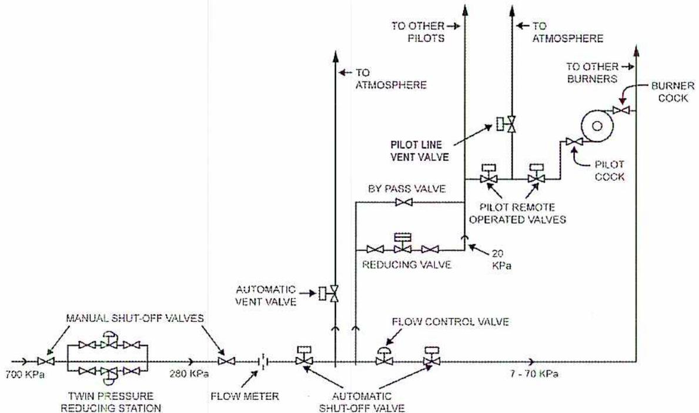
The diagram illustrates the gas piping arrangement for a steam generator. The main gas line starts at 700 kPa and passes through a 'TWIN PRESSURE REDUCING STATION' with 'MANUAL SHUT-OFF VALVES', reducing the pressure to 280 kPa. Downstream of this station is another 'MANUAL SHUT-OFF VALVE', followed by a 'FLOW METER'. The gas then enters an 'AUTOMATIC SHUT-OFF STATION' containing two 'AUTOMATIC SHUT-OFF VALVES' and an 'AUTOMATIC VENT VALVE' that vents to the atmosphere. Between these two automatic shut-off valves, a 'PILOT LINE' branches off, containing a 'REDUCING VALVE' set at 20 kPa, a 'BY PASS VALVE', and a 'PILOT LINE VENT VALVE' that vents to the atmosphere. The pilot line also connects to 'TO OTHER PILOTS'. The main gas line continues through a 'FLOW CONTROL VALVE' and an 'AUTOMATIC SHUT-OFF VALVE', reducing the pressure to 7 - 70 kPa. This line then branches to 'TO OTHER BURNERS' through a 'PILOT REMOTE OPERATED VALVE' and a 'BURNER COCK'. Another branch from the main line before the final shut-off valve goes to 'TO ATMOSPHERE' through a valve.
Figure 6
Gas Piping Arrangement
There is a manual shut-off valve at the point of entry to the plant so that the gas supply can be shut off completely in case of a fire or other emergency. Downstream of the inlet shut-off valve there is a twin pressure reducing station where the pressure of the incoming gas is reduced to approximately 280 kPa. Each pressure regulator is designed to supply gas to the plant at full load. The purpose of the downstream manual shut-off valve is to isolate the pressure reducing station in the event of a major leak at the station.
A gas flow meter is installed downstream of the second manual shut-off valve in order to measure the flow of gas to the steam generator. The gas then flows through an automatic shut-off station with two automatic shut-off valves and an automatic vent valve. In the event of abnormal conditions, such as low gas pressure or loss of combustion air supply, the automatic shut-off valves close, and the vent valve opens.
Situated between the two shut-off valves are the pilot burner take-off line and the main burner control valve. The main burner control valve varies the amount of gas flowing to the burners in accordance with the boiler load. Each main burner is equipped with a shut-off cock immediately at the burner to enable individual burners to be put into or taken out of service as required.
The pilot burner take-off line is equipped with a pressure reducing station where the pressure of the gas flowing to the pilot burners is reduced from 280 kPa to 20 kPa. The pilot gas then flows through a remote controlled shut-off station consisting of two shut-off valves and a vent valve. The vent valve is arranged to open when the shut-off valves close and vice versa. This remote shut-off station serves all the pilot burners on that particular burner deck. The other burner decks (not shown in Fig. 4) are each equipped with a similar remote shut-off station for their pilot burners. In addition, there is a manual pilot cock valve at each individual pilot burner.
The main burner flow control valve varies the main burner gas pressure from 7 to 70 kPa depending upon the boiler load, i.e. at full load the main burner pressure is about 70 kPa.
Gas Piping Systems
Gas piping requires a pitch (slope) of at least 2.5 cm over a 15 m length and have a drip leg at low points where condensate can collect and be drained. Allow for expansion bends in long runs of 100 mm or larger piping. Expansion bends should follow usual good practice for radius, uniformity of curvature, and uniformity of wall thickness.
All branch connections, when needed, are attached to the top or sides of main horizontal pipes rather than the bottom of the pipes. This helps to avoid transporting condensate, scale, and rust from the main piping to the branch connections. Branch connections should be equipped with manual shut-off valves, or plug cocks. Outlets are closed with threaded caps, plugs, or flanges until ready to use.
Shut-off valves on lines to individual buildings should be placed outside buildings so that valves can be closed in the event of an emergency. The location of these emergency shut-off valves should be plainly marked and posted with provisions made to prevent unauthorized operation.
Gas shut-off valves are gate valves or full opening plug cocks. Lubricated plug cocks are usually recommended for pipe sizes over 50 mm. Where gas pressure runs above 35 kPa, it is good safety practice to have lockable shut-off valves.
Objective 3
Describe, using a sketch, the design and operation of solid fuel supply systems.
SOLID FUELS
Solid fuels are often used to fire boilers. The boilers are usually field erected watertube types and are designed specifically for the fuel they will be burning. The most common solid fuel is coal. There are many grades of coal and various ways of preparing it for combustion.
Other types of solid fuels are Biomass fuels. These are fuels that are composed of recently living materials such as bark, shavings and sawdust, leaves, grasses, bamboo, vine clippings, sugar cane, coffee grounds, and rice hulls. Biomass boilers are often designed to use wood as well. Examples of wood-based fuels are: bark, wood sticks, sawdust, over and under sized wood chips, and even used wood pallets.
Garbage and waste materials can also be used to produce steam. Solid wastes can be disposed of by incineration (burning). Landfill sites are becoming less available and less desirable. Therefore, burning of refuse is gaining in acceptance. Heat recovery and strict air pollution guidelines are required for refuse incinerators. The basic incinerators with waste heat recovery have evolved into water-wall boilers with integral stokers, large enough to provide steam for turbine generator sets and commercial power production.
BIOMASS FUELS
Wood and other biomass fuels are composed mostly of cellulose and moisture. The moisture decreases the flame temperature while the cellulose contains fuel bound oxygen that reduces the excess air required for combustion. Generally, wood and biomass fuels generate less NO x (nitrogen oxides) and SO 2 (sulphur dioxide) emissions than fossil fuels.
Biomass fuels require preparation before being fed into the boiler. Most boilers use grating systems to burn the biomass fuels. The methods of grating systems include:
- • Travelling grates are moving grates that allow for continuous ash removal. The cast iron grate bars are attached to chains. The chains are driven by a slow moving sprocket drive system. Usually 60 to 85% of the combustion air is fed from below the grates. There are openings in the grate to feed undergrate air to cool the bars and castings. The traveling grate system is similar to the traveling grate systems used for firing coal.
- • The pinhole grate is water-cooled grate that is clamped to the floor tubes of the furnace. The grates have venture-type air holes to admit air to the burning material on the grate. This produces a semi-suspension mode of burning. The finer particles burn in suspension and the heavier fractions accumulate on the floor as ashes. The ashes are removed by raking: either by manual or mechanical means.
- • The vibrating grate systems have grate bars attached to a frame that vibrates to remove the ash. The vibration is intermittent and is controlled by a timer. The vibrating grates may be air-cooled or water-cooled. The water-cooled grates allow for high under-fed air temperatures.
![Schematic diagram of a Fluidized Bed Biomass Boiler. The diagram shows a vertical furnace chamber with a 'Fluidized Bed' at the bottom. On the left, a 'Coal Feeder' and a 'Bio Mass Feeder' are shown entering the furnace. 'Air Nozzles' are located along the side walls. At the bottom, an 'Air Heater' is connected to the furnace. Exhaust gases pass through a series of 'Precipitators' and are then directed to a 'Stack' via an 'F.D. Fan'. 'B.F.W.' (Boiler Feed Water) is shown entering the top of the furnace.](83852ec55d4802521a727926336bedab_img.jpg)
Figure 7
Fluidized Bed Biomass Boiler
The fluidized bed boiler shown in Fig. 7 is designed to burn biomass and coal in combination. It has two fuel feeders mounted on the side of the furnace. The coal is fed using a screw feeder. Biomass is fed using a belt chain feeder and a mechanical spreader. The boiler is a natural circulation design and the bed temperature is controlled by extracting heat with evaporator tubes in the fluid bed. The evaporator tubes have pin studding, increasing the life of tubes. The bubbling bed air nozzles are mounted inside and above the ash hoppers. The secondary air ports are located at two levels and air flows are varied according to the types of fuel being fired.
Biomass fuels require preparation so they can be fed into the boiler. The size of the fuel must be small enough not to plug the feeder. Solids handling equipment systems using conveyors, hoppers, crushers and feeders are used to condition and feed the biomass.
REFUSE FUELS
There are two main techniques of burning refuse. They differ in the amount of preparation the fuel goes through. The first technique is called mass burning, and uses the fuel as received with little preparation. Only large non-combustible items or bulky items are removed. The second technique of burning refuse involves more preparation of the refuse before combustion. It is referred to as RDF (refuse derived fuel). The refuse is separated, classified, and sorted to remove recyclable products, as illustrated in the fuel preparation system in Fig. 8.
Trucks deliver the refuse before it is fed into the primary shredder. From the primary shredder, the refuse is fed over a magnetic separator, removing any ferrous materials. It then passes to the secondary shredder to reduce the size of the pieces. It is then stored before being metered into the boiler. The combustion takes place on the grates as they move along the bottom of the furnace. Non-combustible material and ash drop into the ash pit at the end of the grate. Boiler ash and flyash from the scrubbers and precipitators are disposed of in the ash system.
![A flow diagram illustrating the refuse fuel preparation system. The process starts at a 'Receiving & Storage Area' where trucks deliver refuse. The refuse is then processed through a 'Primary Shredder', followed by a 'Magnet' that separates 'Ferrous Material'. The remaining material goes through a 'Trommel' which separates 'Residue'. The material then passes through a 'Secondary Shredder' and into 'Refuse Fuel Storage'. From storage, the refuse is metered through a 'Metering Bin' into a 'Boiler'. The boiler is connected to an 'Ash System' and a 'Heat Recovery' unit. The 'Heat Recovery' unit is part of an 'Emission Control System' which includes a 'Scrubber' and a 'Precipitator or Fabric Filter' that lead to a 'Stack'.](79e1709a7317ead45379cbb8ff3ba802_img.jpg)
graph LR
Trucks[Trucks] --> R[Receiving & Storage Area]
R --> PS[Primary Shredder]
PS --> M[Magnet]
M -- Ferrous Material --> FM[Ferrous Material]
M --> T[Trommel]
T -- Residue --> Res[Residue]
T --> SS[Secondary Shredder]
SS --> RFS[Refuse Fuel Storage]
RFS --> MB[Metering Bin]
MB --> B[Boiler]
B --> AS[Ash System]
B --> HR[Heat Recovery]
HR --> S[Scrubber]
S --> PF[Precipitator or Fabric Filter]
PF --> ST[Stack]
subgraph ECS [Emission Control System]
S
PF
end
Figure 8
Refuse Fuel Preparation
Refuse firing boilers are similar to boiler for firing biomass.
COAL PROPERTIES
Coal is a difficult fuel to deal with, and requires an ash removal system. Despite these difficulties, coal use is increasing as it is an economical fuel. More and more plants are being designed for coal instead of for gas or oil, as the price of coal does not fluctuate as the price of natural gas and oil does.
The constituents of coal are carbon, hydrogen, oxygen, sulphur, nitrogen, moisture, and ash. Some of the carbon is combined with hydrogen to form hydrocarbons. These hydrocarbons, along with other compounds, are known as volatile matter as they pass off as gas when the coal is heated. The carbon remaining after the volatile matter is driven off is known as fixed carbon.
Coals are divided into classes or groups according to various characteristics, such as the percentage of fixed carbon and volatile matter and heating value. The classes that power engineers should be familiar with are as follows:
Anthracite: This coal is harder than any other type of coal. It has a high percentage of fixed carbon, over 92%, and less than 8% volatile matter. It ignites slowly but burns at a high temperature with a short clear flame. Its use in power plants is limited due to its high cost. A frequent disadvantage of harder coals is their high sulphur content, which contributes to environmental emissions.
Semi-anthracite: This coal burns with a short clear flame. It contains between 86% and 92% fixed carbon and between 8% and 14% volatile matter. This coal is also very expensive and thus its use in power plants is limited.
Bituminous: This class of coal has several subdivisions according to the volatile content. Low volatile bituminous has 14% to 22% volatile matter. Medium volatile bituminous has 22% to 33% volatile matter. High volatile bituminous has over 31% volatile matter. Bituminous coals are generally considered to be the best suited for power plants due to reasonable cost and availability.
Sub-bituminous: This coal has high moisture content; therefore it is not usually shipped away from the mine for power plant use. It is often economical to use when the power plant is erected at the mine location.
Lignite: This coal has high ash and moisture content with a low heating value. Therefore, it is not always economical to ship this coal long distances. However, it is used in power plants adjacent to lignite coal fields. Lignite may be shipped to sites with higher sulphur content coals, where it is blended with the local coal.
PULVERIZED COAL SUPPLY SYSTEMS
When any of the above mentioned coals are used in power plants, they are usually pulverized. This module discusses the methods used to bring the coal from the storage area into the plant, and then traces its path through the coal pulverizer to the burners; see Fig.9. Ash handling systems are also included in Fig. 9.
![Figure 9: Coal from Storage to Plant. A flow diagram showing the process of coal handling from storage to the boiler. Coal from storage is moved by a reclaim belt through reclaim hoppers, a coal breaker, and a magnetic pulley. It then passes through a belt weighing machine and a plant hopper to a coal feeder. Primary air is introduced at the coal pulverizer. The pulverized coal is fed into the boiler, which also receives high-pressure water. Exhaust gases from the boiler pass through an electrostatic precipitator and are released through a stack. Fly ash is collected in a fly ash silo, and bottom ash is removed via an ash pump to an ash pit.](c914f51f4427bc672dd0526cfc90ebe9_img.jpg)
Figure 9
Coal from Storage to Plant
Coal Storage and Handling
The coal is unloaded from the ships, trains, or large coal haulers (if the mine is next to the plant). See Fig. 10 for an example of a coal storage area, and Figs.11 and 12 for methods used to unload ships and rail cars.
![Figure 10: Ground Plan of a Power Station Site, Using Drag Scraper. A site plan diagram showing the layout of a power station. It includes a coal store with a drag scraper system, a weighbridge, a hopper for road-borne coal, coal barges, cranes, a weigher, a winch cabin, a crusher, a boiler house, a turbine room, a switch house, an emergency hopper, a control room, and a wagon tippler with a weighbridge. Various conveyor belts (Belt No. 1, 2, 3, 4, 5, 6, 7) are shown connecting different parts of the facility, including over coal bunkers and a screen.](844077b3034f0030b404207db0ad76b4_img.jpg)
Figure 10
Ground Plan of a Power Station Site, Using Drag Scraper
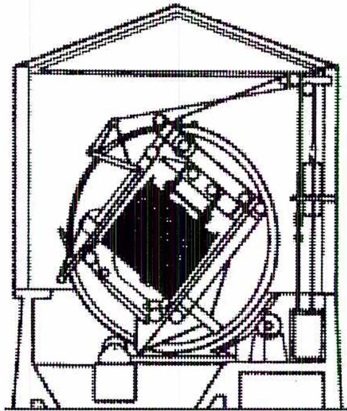
A technical line drawing of a rotary car dumper. It shows a large, heavy-duty frame with a central rotating mechanism. A hopper is mounted on this mechanism, designed to rotate and dump its contents. The entire assembly is supported by a sturdy metal framework.
Figure 11
Rotary Car Dumper
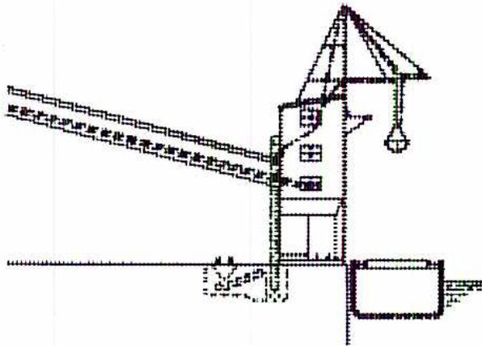
A technical line drawing of a coal tower. It features a tall vertical structure with a boom extending from the top. At the end of the boom is a clamshell bucket, which is used for loading or unloading coal from barges. Below the tower, there's a conveyor belt system and a hopper for coal storage or processing.
Figure 12
Coal Tower with Clamshell
The rotary car dumper has fast high-capacity unloading and can also weigh the load. The coal tower with clamshell has a bucket that lifts coal from barges and delivers it to the conveyor. Beneath the coal storage area are reclaim hoppers. These hoppers dump the coal on to the reclaim belt which takes it to the coal breakers.
Coal Breakers
In the coal breakers, the coal chunks are broken down into 5 cm pieces. The breaker (see Fig. 13) is a large cylinder (size depends on capacity) made of perforated steel plates on
which are mounted rows of lifting shelves. The cylinder rotates at 12 to 20 rpm inside a steel casing with a hopper bottom which collects the coal that passes through the screen plates.
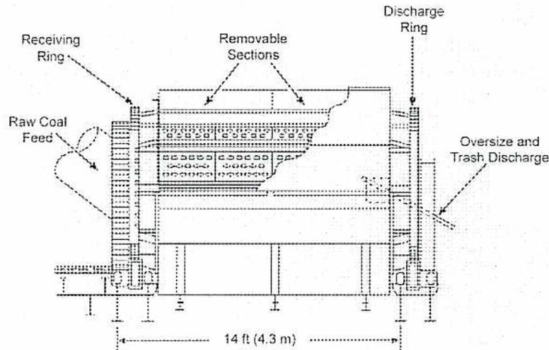
A schematic diagram of a coal breaker. It shows a horizontal cylindrical structure. On the left, an arrow labeled "Raw Coal Feed" points into the cylinder. Inside the cylinder, there are several horizontal shelves. The top of the cylinder is divided into three "Removable Sections". On the right side, a "Discharge Ring" is indicated. Below the discharge ring, an arrow labeled "Oversize and Trash Discharge" points outwards. A dimension line at the bottom indicates the length of the main cylindrical section is "14 ft (4.3 m)". A "Receiving Ring" is shown at the far left end.
Figure 13
Coal Breaker
Coal passes into the breaker feed end, and the fine pieces are immediately screened out. Larger lumps are lifted by the shelves and dropped down to the screen. These lumps are broken down by gravity impact. The harder lumps of coal are gradually fed toward the rear of the breaker where they are reduced by a hammer mill as shown in Fig.14. The hammer mill also removes tramp metal from the coal.
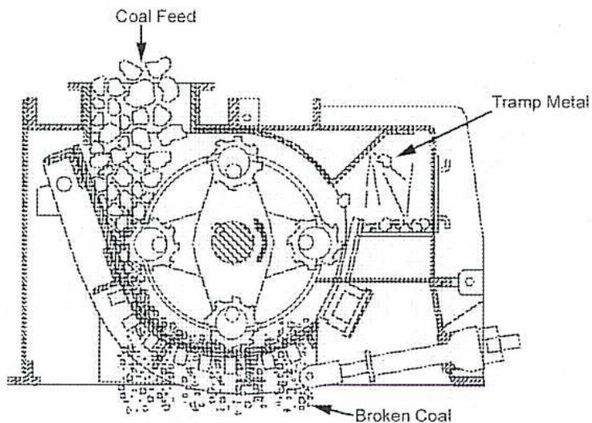
A detailed cross-sectional diagram of a hammer mill. At the top, an arrow labeled "Coal Feed" points into a chamber. Inside the chamber, a central shaft drives several hammers (beats) that are positioned to strike the coal. As the coal is broken, it moves towards the bottom of the chamber, where an arrow labeled "Broken Coal" points out. On the right side of the chamber, there is a mechanism for removing "Tramp Metal", shown as a separate discharge point.
Figure 14
Hammer Mill at End of Coal Crusher
Magnetic Pulley
When the coal leaves the breaker on its way to the belt weighing machine it passes over a magnetic pulley which removes tramp iron from the coal as shown in Fig. 15.
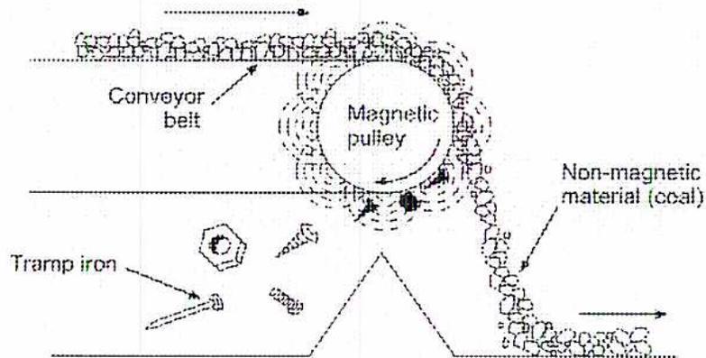
A schematic diagram showing a conveyor belt moving from left to right over a circular magnetic pulley. The belt carries a mixture of coal and tramp iron. As the belt passes over the pulley, the tramp iron (represented by a bolt, nut, and washer) is attracted to the pulley's surface and falls off onto a collection area below. The remaining non-magnetic material (coal) continues along the belt's path. Labels include 'Conveyor belt', 'Magnetic pulley', 'Tramp iron', and 'Non-magnetic material (coal)'.
Figure 15
Magnetic Pulley
Belt Weighing Machine
The crushed coal then moves to the belt weighing machine which measures the amount of coal that is brought into the plant. An example of a belt weighing device is shown in Fig.16. It has a weight indicating sensor, or load cell, measuring the weight or mass of material on the belt. As the speed of the belt is known, the amount of coal passing over the belt in a period of time is determined.
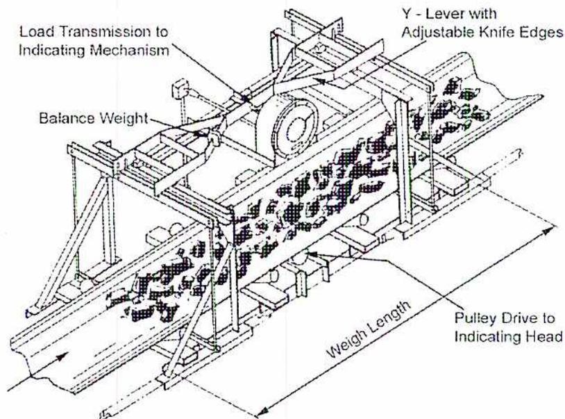
A 3D perspective drawing of a belt weighing machine. A conveyor belt runs horizontally through a metal frame. A section of the belt is designated as the 'Weigh Length'. Above this section, a 'Y - Lever with Adjustable Knife Edges' is positioned to measure the weight of the coal on the belt. This lever is connected to a 'Load Transmission to Indicating Mechanism', which includes a 'Balance Weight'. At the downstream end of the weigh section, a 'Pulley Drive to Indicating Head' is shown. The entire assembly is supported by a sturdy metal frame.
Figure 16
Belt Weighing Machine
Plant Hoppers
Then the coal enters the plant hoppers or bunkers, which act as a coal reservoir, in case the supply of coal is interrupted temporarily. Normally each bunker supplies a feeder that supplies a pulverizer, fluid bed or cyclone. The bunker has a capacity of three to twelve hours, depending on the boiler load and plant design.
Coal Feeders
The plant hopper drops the coal into the coal feeder which controls the flow of coal into the pulverizer. Fig 17 shows a belt feeder. The speed of the belt varies with the boiler load and is controlled by the boiler master controller.
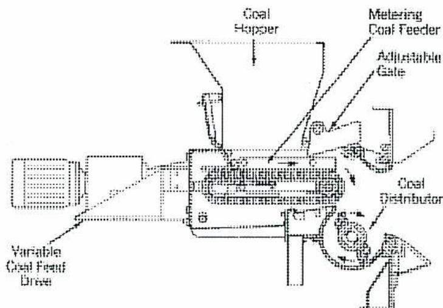
A schematic diagram of a chain-type coal feeder. Coal is shown entering from the top through a 'Coal Hopper'. Inside the feeder, a 'Metering Coal Feeder' mechanism with an 'Adjustable Gate' regulates the flow. The coal is then directed to a 'Coal Distributor' at the bottom right. On the left, a 'Variable Coal Feed Drive' is connected to the feeder's chain mechanism.
Figure 17
Chain Type Coal Feeder
Coal Pulverizers
The two most common pulverizers are the ball-race mill and the ring-roll mill. Fig. 18 shows the operating principal of a ball-race mill. The centre shaft of the mill is rotated by the motor and gearing.
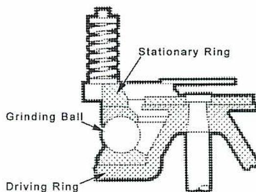
A cross-sectional diagram of a ball-race mill. It features a 'Stationary Ring' at the top, a 'Grinding Ball' in the center, and a 'Driving Ring' at the bottom. The diagram illustrates the arrangement of these components for coal pulverization.
Figure 18
Ball-race Mill
Attached to the centre shaft is the driving ring that also turns. A grinding ball rotates between the driving ring and the stationary ring. Tension is applied to the stationary ring by a spring. Coal is ground between the ball and the two rings. When the coal is ground fine enough the air flow through the mill carries it away to the burners.
Fig. 19 shows a ring-roll mill or bowl mill. The coal is fed down the feed pipe at the center of the mill and dispersed around the grinding rolls. The coal is ground between the rotating bowl and the grinding rolls. Tension is applied to the grinding rolls with springs.
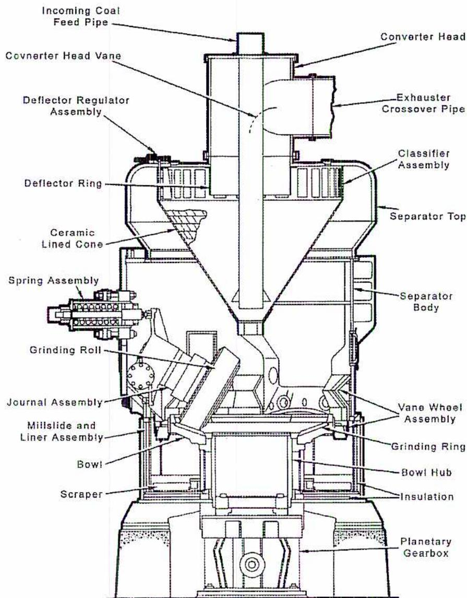
The diagram illustrates the internal structure of a C-E Bowl Mill. At the top, an 'Incoming Coal Feed Pipe' leads into a 'Converter Head' which contains a 'Converter Head Vane'. An 'Exhauster Crossover Pipe' is also connected to the converter head. Below the converter head is a 'Classifier Assembly' located within the 'Separator Top'. A 'Deflector Regulator Assembly' and a 'Deflector Ring' are positioned around the classifier. The 'Separator Body' contains a 'Ceramic Lined Cone'. On the left side, a 'Spring Assembly' provides tension for a 'Grinding Roll'. The grinding roll is mounted on a 'Journal Assembly' and interacts with a 'Grinding Ring' and a 'Bowl Hub'. The 'Bowl' is part of the 'Millslide and Liner Assembly' and is rotated by a 'Planetary Gearbox' at the base. A 'Scraper' is attached to the millslide. On the right side, a 'Vane Wheel Assembly' is shown within the separator body.
Figure 19
C-E Bowl Mill
The pulverized coal is carried to the burners by the airflow through the pulverizer. A classifier is used to screen out large particles of coal. They fall out of the airflow for more grinding.
ASH HANDLING
Ash handling for a coal-fired plant is a major operation. The equipment is costly to operate and maintain. There are two types of ash that need to be removed from the boiler and the downstream ducting.
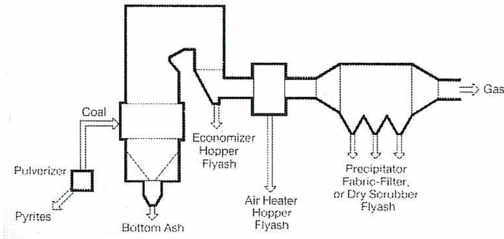
The diagram illustrates the flow of coal and air through a boiler system. Coal enters a Pulverizer, which also receives Pyrites. The pulverized coal is then carried into the furnace. From the furnace, Bottom Ash is removed from the bottom. Flyash is carried out of the furnace with the flue gas flow. The flue gas passes through an Economizer, where Economizer Hopper Flyash is removed. The gas then passes through an Air Heater, where Air Heater Hopper Flyash is removed. Finally, the gas passes through a Precipitator (Fabric-Filter, or Dry Scrubber), where Precipitator Flyash is removed. The remaining Gas is exhausted through a stack.
Figure 20
Ash Removal Points
- • Bottom ash is ash that is removed from the bottom of the furnace. Ash and slag dropping out of the furnace are quenched in water-filled bottom ash hoppers below the furnace. When the ash is removed from the hopper, a sluice gate opens, and the ash grinder starts. The ash grinder grinds up the ash and slag so that it is fine enough to go through the bottom ash pumps. High-pressure water carries this slurry to the suction of the bottom ash pumps. The pumps then pump the slurry to an ash pond or to a settling tank.
- • Flyash is carried out of the furnace with the flue gas flow. This ash must be removed from the flue gas flow before it exits the stack to avoid polluting the environment. Typical removal points are the economizer hoppers, air preheater and precipitator hoppers as shown in Fig. 20.
Dust Collectors
Several designs of dust collectors are used in steam generating plants, but the two most common types are the centrifugal collector and the electrostatic precipitator .
Centrifugal Collectors
With this type of collector, the ash-laden flue gas is given a swirling motion as it enters. The dust particles are removed by centrifugal force and fall into the hopper below. The clean gas then exits through a central outlet; see Fig. 21.
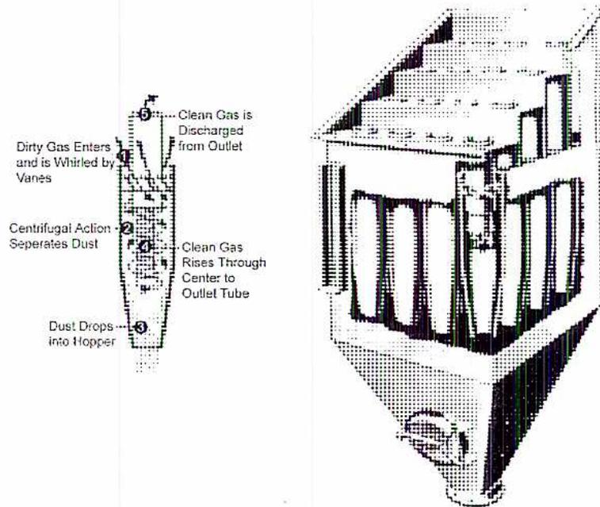
The diagram illustrates the internal structure and gas flow of a centrifugal dust collector. On the left, a cross-sectional view shows the following components and flow:
- 1 Dirty Gas Enters and is Whirled by Vanes
- 2 Centrifugal Action Separates Dust
- 3 Dust Drops into Hopper
- 4 Clean Gas Rises Through Center to Outlet Tube
- 5 Clean Gas is Discharged from Outlet
On the right, a 3D perspective view shows the cylindrical body of the collector with an inlet at the top and a hopper at the bottom. The internal vanes are visible, and the central outlet tube extends from the top through the center of the unit.
Figure 21
Centrifugal Dust Collector
Electrostatic Precipitators
With this collector, the dust particles are given an electric charge by emitting electrodes. The charged particles are attracted to collecting electrodes and held until they are jarred loose by rapping hammers and fall into the hopper below as shown in Fig. 22.
![A detailed 3D cutaway diagram of an Electrostatic Precipitator (ESP) showing its internal and external components. The diagram is labeled with various parts: 'Quick Opening Inspection Cover' and 'Small Insulator Housing' on the top left; 'Support Insulator', 'Emitting Rapping Motor', and 'Large Insulator Housing' on the top center; 'Quick Opening Inspection Door' and 'High Voltage Cable' on the top right; 'Adjustable Gas-Control Baffles' and 'Gas Inlet' on the left side; 'Emitting Rapping Hammers' on the left side; 'Clean Gas Outlet' on the right side; 'Collecting Rapping Motor', 'Collecting Electrode Rapping Hammers', 'Emitting Spiralelectrodes', and 'Collecting Electrodes' at the bottom.](008b6e24fa6aef654a11223efed035dd_img.jpg)
Figure 22
Electrostatic Precipitator
The flyash is removed from the hoppers by high velocity air and carried to a flyash silo where it is deposited in hoppers. The air that carried the ash to the silo is filtered before it is exhausted to the atmosphere. The dry ash may be hauled away for use in such products as cement. The ash can also be mixed with water and trucked away for disposal.
Chapter Questions
B2.1
- 1. Make a single-line sketch of an oil-handling layout for a modern high-pressure, high-output boiler. Include details of the storage, heating, pumping, and filtering methods employed.
- 2. What is the purpose of the constant flow cycle control valve?
-
3. (a) What is the minimum temperature for fuel oil in a storage tank in order for the fuel oil pump to be able to pump the fuel oil to the heater?
(b) What temperature must fuel oil be for mechanical atomizing, and for steam atomizing? - 4. Sketch a supply system to a gas-fired power plant. Show the pipe work and valves and indicate the gas pressures you would expect to find employed.
- 5. Using a single line sketch, show the ash removal points on a pulverized coal fired boiler.